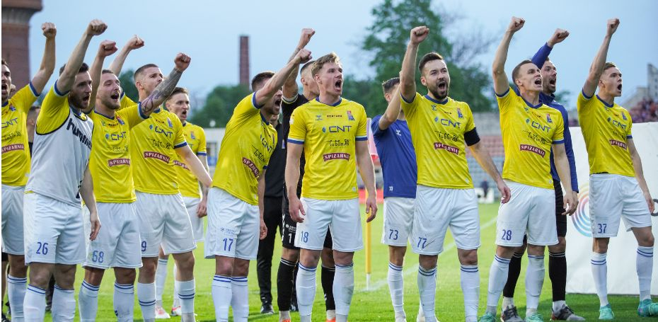
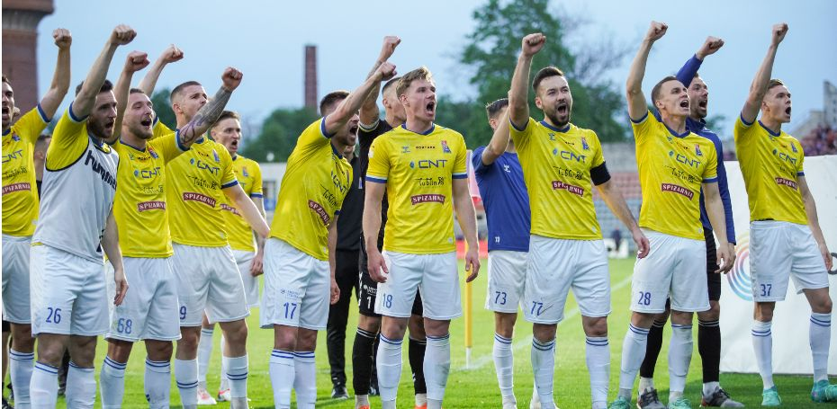

Motor Lublin – historia, tradycja i ambicje
Motor Lublin to znany i ceniony klub sportowy z Lublina, który odegrał ważną rolę w historii sportu w tym regionie Polski. Został założony w 1950 roku i od samego początku był związany z przemysłem motoryzacyjnym, stąd jego nazwa – „Motor”. Najbardziej rozpoznawalna jest sekcja piłkarska, która przez lata występowała na różnych poziomach rozgrywek w Polsce. Największe sukcesy klub odnosił w latach 80., kiedy grał w Ekstraklasie – najwyższej klasie rozgrywkowej. W ostatnich sezonach Motor Lublin powrócił do pierwszej ligi i walczy o awans do Ekstraklasy, co jest marzeniem zarówno piłkarzy, jak i wiernych kibiców. Klub rozgrywa swoje mecze na nowoczesnym stadionie Arena Lublin, który został otwarty w 2014 roku i może pomieścić ponad 15 tysięcy widzów. Stadion ten spełnia najwyższe standardy UEFA i gościł już wiele ważnych wydarzeń sportowych. Barwy Motoru to żółty i biały. Klub ma bardzo oddanych kibiców, którzy regularnie wspierają drużynę, tworząc wyjątkową atmosferę na trybunach. Fani Motoru są znani z pasji i przywiązania do tradycji klubu. Warto wspomnieć, że w przeszłości Motor Lublin prowadził także inne sekcje sportowe – m.in. żużlową, lekkoatletyczną i bokserską. Dziś klub skupia się przede wszystkim na piłce nożnej, inwestując w rozwój młodzieży i szkolenie nowych talentów. Motor Lublin to coś więcej niż tylko klub – to symbol miasta, dumy lokalnej społeczności oraz długiej i bogatej historii sportu w Lublinie.
Akademia
Akademia Piłkarska Motor Lublin to prężnie rozwijająca się struktura klubu, która szkoli ponad 500 młodych zawodników od kategorii U7 do U19.
üéñÔ∏è Wyr√≥≈ºnienia i standardy
Akademia posiada Srebrny Certyfikat PZPN, co potwierdza wysoki poziom szkolenia młodzieży w Polsce.
üìä Infrastruktura i organizacja
Treningi odbywają się na nowoczesnych boiskach przy ul. Przeskok 3 oraz na Arenie Lublin. Klub korzysta także z systemu ProTrainUp dla lepszej komunikacji i organizacji.
⚽ Treningi specjalistyczne
W akademii działają indywidualne treningi z trenerem Piotrem Ćwikiem oraz specjalne treningi bramkarskie pod okiem Jakuba Zolecha.
üéì Edukacja i partnerstwa
Motor współpracuje z VII Liceum w Lublinie oraz Akademią Wincentego Pola, łącząc rozwój sportowy z edukacją. Akademię wspiera PKN Orlen w ramach programu „Piłkarska Przyszłość z ORLENEM”.
FanShop
Motor Lublin posiada własny oficjalny fan shop, w którym kibice mogą kupić klubowe gadżety i odzież. Sklep oferuje szeroki wybór produktów – zarówno dla dorosłych, jak i dla dzieci. W ofercie znajdują się koszulki meczowe, bluzy, kurtki, czapki, szaliki, plecaki, kubki, smycze, a także różne pamiątki z herbem klubu. Można tam również kupić produkty codziennego użytku, takie jak notesy, długopisy czy poduszki w barwach Motoru. Fan shop działa zarówno stacjonarnie, jak i online. Sklep stacjonarny znajduje się przy stadionie Arena Lublin (ul. Stadionowa 1), a drugi punkt sprzedaży mieści się w Galerii Olimp – popularnym centrum handlowym w Lublinie. Dzięki fan shopowi kibice mogą okazać swoje wsparcie dla klubu i nosić barwy Motoru Lublin z dumą. Zakupy w oficjalnym sklepie wspierają finansowo klub i jego dalszy rozwój.
Poniedziałek - sobota 10:00 - 18:00
Niedziela handlowa 10:00 - 18:00
ü§ù Sponsorzy
SPONSOR TYTULARNY

PARTNER STRATEGICZNY

SPONSORZY GŁÓWNI

Zdjęcia
 
